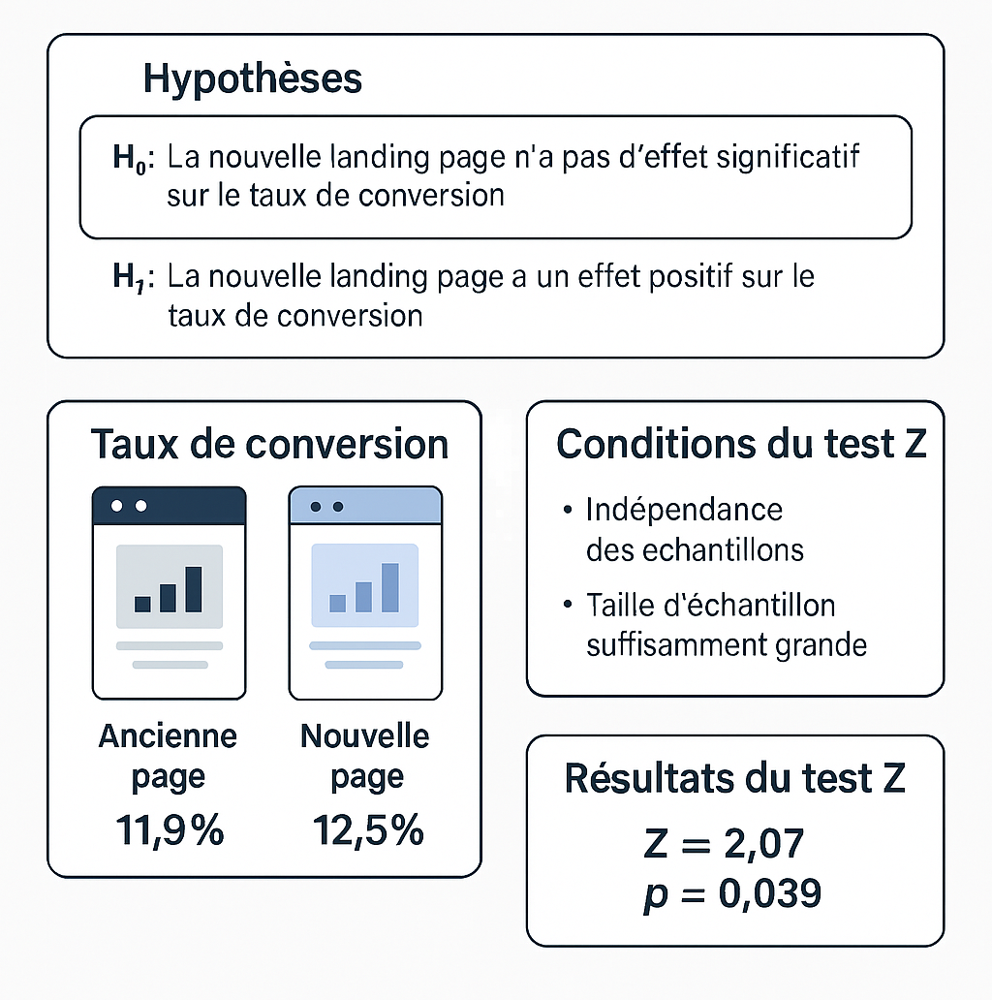

Étudiant en Master en Économie Quantitative & Calculable
2 ans d'expérience
Avec une expertise dans des langages de programmation 🔧 tels que Python, SQL etc., et une maîtrise des techniques de machine learning 🤖 (régressions, arbres de décision, clustering, etc.), je suis capable d'apporter une réponse adaptée aux besoins analytiques et décisionnels dans divers contextes.
Objectif : Augmenter le nombre d’achat grâce à une nouvelle page.  📥 Télécharger le projet
Objectif : Maximiser l'impact des campagnes marketing grâce à l'analyse des données et au machine learning.
Méthodes : Clustering K-Means identifiant 4 segments de clients en fonction des revenus et des habitudes de consommation.
Résultats : Prédiction de réponse aux campagnes avec une précision de 89 % à l'aide d'un modèle Random Forest.
📥 Télécharger le projet
Objectif : Développer un modèle de scoring de crédit pour prédire les probabilités de remboursement de prêts.
Méthodes : Régression Logistique et Arbres de Décision appliqués en Python (pandas, NumPy, scikit-learn, imbalanced-learn).
Résultats : AUC-ROC > 0,75, améliorant l’évaluation des risques de crédit.
📥 Télécharger le projet
Objectif : Optimiser un portefeuille d’investissement pour maximiser le rendement et minimiser le risque.
Méthodes : Analyse financière et programmation sur des données boursières du CAC 40.
Résultats : Rendement annuel de 12,92 %, volatilité de 8,17 %, et ratio de Sharpe de 1,34.
📥 Télécharger le projet
Objectif : Prédire l’attrition des clients pour une plateforme par abonnement.
Méthodes : Analyse exploratoire des données, sélection de variables, réduction dimensionnelle.
Résultats : Identification des principaux facteurs de churn et modèle prédictif avec une précision de 80 %.
📥 Télécharger le projet
Facile ! Vous pouvez directement m'envoyer un message, ci-dessous, ou m'écrire sur les autres plateformes où je publie regulièrement des articles